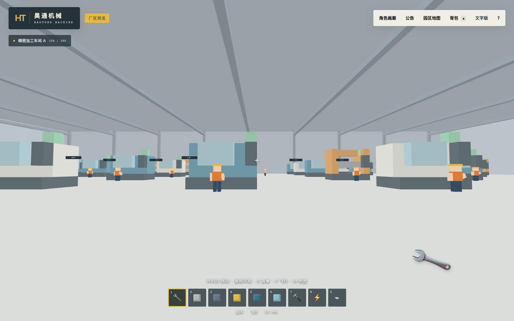
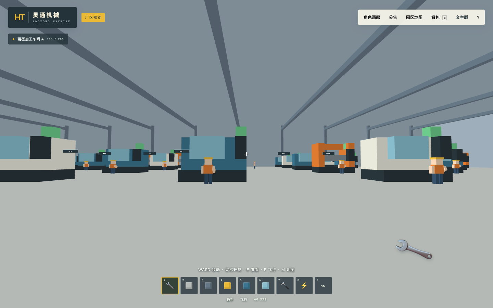
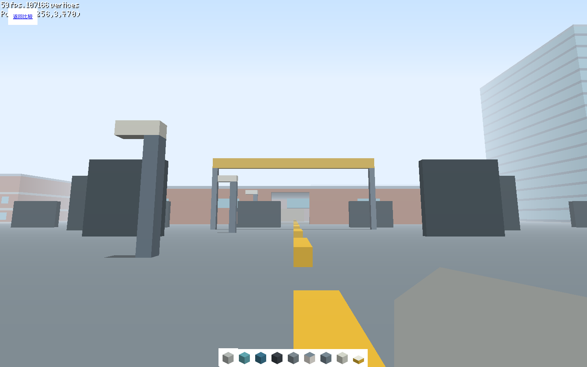

轻量厂区方案

Three.js 渲染，后台线程合并方块表面。区块随移动加载和卸载；工业实体与中文界面由本站控制。
桌面试玩手机控制预览两套新方案使用同一张 512 × 96 × 512 厂区、同一组原图、中文内容和操作界面。这是规划书 E0 阶段的可玩原型，设备细节、特殊方块形状和真机验收仍待继续完成。
建议选择轻量厂区方案：本机两套方案都约 60 FPS；轻量方案的代码包与主线程内存更小，方块表面合并在后台线程进行。

Three.js 渲染，后台线程合并方块表面。区块随移动加载和卸载；工业实体与中文界面由本站控制。
桌面试玩手机控制预览
采用 noa 0.33.0 与 Babylon.js 6.49.0。已有方块区块与实体基础，复用同一厂区、原图、背包和控制方式。
桌面试玩手机控制预览
ClassiCube 1.3.8 导入相同厂区的建筑与设备。此基线没有新实体、原图展板和中文背包，负载较少。
桌面基线手机基线正在读取结果。手机模拟不能替代真机测试。
新浏览器上下文、空缓存，入口稳定后采样 10 秒，车间采样 6 秒；每个模式仅一次测量。可操作时间表示出生区域可以移动，原图可能仍在下载。资源请求量是采样时已请求的资源总量，包含原图，未启用压缩；JS 堆不包含 Worker、GPU 或 WASM 内存。ClassiCube 的 WASM 堆另占 32 MB。三个方案在本机均达到约 60 FPS，不能据此认定新方案帧率更快。
两个新候选统一视距、FOV、控制和实体预算。ClassiCube 基线没有新增 NPC 和展板，视距也由原引擎单独控制，不能直接用作完整负载的胜负比较。
Luanti 浏览器移植为实验性 WASM 方案，需要专门构建、响应头配置及内容包。Voxelize 的标准架构需要 Rust 服务器，与当前纯静态约束不合。DVE 有后台线程架构，本次没有导入相同厂区实测。实际做了两套新候选与一个旧引擎基线，没有把调研项目写成实测。
资料：noa · Three.js · Luanti WASM · Voxelize · DVE
两张新图都是昊通机械的小撒；两张原有鲨鱼服 GIF 是薛若米。文件原样保留，画廊和厂区展板均可打开原图。